Los hombres rosas de Miyano
2011-11-25T06:55:14Z
Miyano(宮野) era un antigua aldea cercana a la ciudad de Yamaguchi (capital de la prefectura del mismo nombre), que en 1941 pasó a ser un distrito periférico de la capital prefectural. No obstante, muchas de sus antiguas costumbres de cuando eran un pueblito se conservan y un claro ejemplo es esta que llamo (para simplificar) [...]
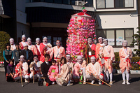
Miyano(宮野) era un antigua aldea cercana a la ciudad de Yamaguchi (capital de la prefectura del mismo nombre), que en 1941 pasó a ser un distrito periférico de la capital prefectural. No obstante, muchas de sus antiguas costumbres de cuando eran un pueblito se conservan y un claro ejemplo es esta que llamo (para simplificar) la de los hombres rosas de Miyano, que se visten así durante un festival muy curioso en pro de la fertilidad de su pueblo. También el maquillaje de sus caras es muy llamativo.

No obstante, creo que lo mejor es que veáis en qué consiste este ritual echando un ojo al vídeo que hay bajo estas líneas. No obstante, si os pica la curiosidad y queréis saber más, pulsando AQUÍ tenéis un documental completo sobre este festival (y subtitulado en español) realizado por mi amigo Roman Ljubimov, al que le agradezco el material audiovisual cedido para la realización de esta entrada.
Esto es solo un adelanto, podeís ver el documental completo aquí.
¡¡ BUEN FIN DE SEMANA A TODOS !!
Shitennō-ji (四天王寺)
2011-11-22T07:00:05Z
El templo budista de Shitennō-ji (四天王寺) es para mí uno de los lugares imprescindibles a visitar de la ciudad de Osaka, más que nada porque el más famosos de la ciudad y de los más populares en Japón, ya que muchos lo consideran el más antiguo del país y, de alguna manera, es cierto, ya [...]

El templo budista de Shitennō-ji (四天王寺) es para mí uno de los lugares imprescindibles a visitar de la ciudad de Osaka, más que nada porque el más famosos de la ciudad y de los más populares en Japón, ya que muchos lo consideran el más antiguo del país y, de alguna manera, es cierto, ya que su primera construcción data del año 593 de nuestra era. Fue mandado construir Príncipe Shōtoku, que fue uno de los mayores impulsores del budismo en aquella época.
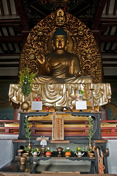
No obstante aquí hay una pequeña polémica, porque no queda nada de la edificación original, lo que vemos es una reconstrucción, además bastante reciente, del 1963. Para mí, por lo tanto el templo más antiguo de Japón, es el Horyuji (法隆寺) (ubicado en Nara) ya que conserva alrededor del 15% de su construcción del año 670 (la construcción original es del 607, pero se reconstruyó más tarde tras un incendio que también es causa de polémica), siendo, de una forma u otra, la edificación de madera (que aún se conserva) más antigua del mundo.
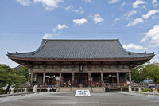
Para llegar hasta el Shitennō-ji (四天王寺), lo más fácil es ir hasta la estación de metro Shitennoji-mae Yuhigaoka (四天王寺前夕陽ヶ丘駅) y andar hasta la puerta más cercana. En realidad, es un recinto sagrado con varias edificaciones. La entrada al recinto y a los altares de los alrededores es gratuita, pero la entrada al claustro donde se encuentran las construcciones más importantes (entre las que destaca el pabellón principal (Kondō) y la pagoda de cinco alturas) cuesta 300yenes. Quizá lo veáis más claro en este mapa.
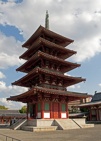
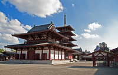
El 4, número de la mala suerte
2011-11-16T09:29:51Z
Este es el ascensor de mi nuevo apartamento en Guangzhou, antes lo tenía en el barrio de Tianhe, y me planteé cambiarme a Zhujiang New Town, pero finalmente me he ido a un barrio con menos extranjeros (ya os hablaré de él) a ver si así aprendo chino de una vez por todas. El caso [...]
Este es el ascensor de mi nuevo apartamento en Guangzhou, antes lo tenía en el barrio de Tianhe, y me planteé cambiarme a Zhujiang New Town, pero finalmente me he ido a un barrio con menos extranjeros (ya os hablaré de él) a ver si así aprendo chino de una vez por todas. El caso es que, si os fijáis, no hay botón para la cuarta planta, la llaman 3A y es porque el 4 es el número de la mala suerte en China, superstición que también han heredado los japoneses y coreanos. Fue algo que ya me pareció muy curioso cuando me lo explicaron recién llegado a Japón hace ya seis años. Nunca había hablado de ello en el blog y, justo hoy que he visto los botones al bajar a comer, me he acordado.
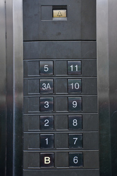
Resulta que 4 en chino (四) se pronuncia “si”, igual que muerte (死), aunque se escriban con caracteres distintos. Esto en Japón también sucede ya que la lectura Onyomi (pronunciación japonesa de los kanji que se adaptó del chino) de ambos términos es la misma：”shi”. De la misma forma, en Corea sudece con la pronunciación sa (사) para decir 4 (gracias a Felipe de Eurowon por dejarnos esta información en los comentarios). Esto llega al extremo de que en muchos edificios, hoteles y sobretodo, hospitales, no hay planta cuarta, o habitación 4, como es el caso del piso donde vivo. En general, en los países de Asia oriental hay muchas supersticiones polisémicas y homofónicas, hoy solo he comentado una de las más evidentes, aunque ya hablé de otra cuando dí algunos consejos para los negocios en China, así que, estaría muy bien que, si conocéis más, las pusiérais en común en los comentarios.
Pepero Day (빼빼로데이)
2011-11-11T10:07:56Z
Pulsando sobre la imagen escucharás “la canción del Pepero” Hoy, os voy a hablar de lo importante que es un día tal y como hoy en Corea del sur, y es que el 11/11 de cada año es el Pepero Day (빼빼로 데이) y, aunque por el nombre lo pareza, NO tiene nada que ver [...]

Pulsando sobre la imagen escucharás “la canción del Pepero”
Hoy, os voy a hablar de lo importante que es un día tal y como hoy en Corea del sur, y es que el 11/11 de cada año es el Pepero Day (빼빼로 데이) y, aunque por el nombre lo pareza, NO tiene nada que ver con política. Los Pepero son unas barritas de galleta con chocolate por encima que surgieron en 1983 inspirados por los Pocky de Glico nipones. Actualmente, además de chocolate hay una amplia variedad de sabores. Debido a su forma estrecha y alargada, el día 11/11 se convirtió en el pepero day de forma espontánea, ya que simula cuatro de estos peperos (no de los otros), y las parejas jóvenes y amigos se regalan este tipo de dulces durante este día, así que imagináos este año que es 11/11/11.
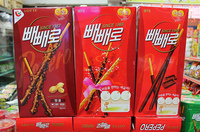
Foto de Koreataste.org
Según la marca, Lotte , ellos no iniciaron esta campaña, si no que observaron que ese día crecían mucho las ventas y comenzaron a explotarlo, pero aseguran que surgió de forma espontánea. Y, personalmente me lo creo, ya que en China, este día (también de forma espontánea) es el día de los solteros, ya que tantos 1s representan personas solas, y se suele comer YouTiao para desayunar. ¿Curioso verdad?. Para terminar os dejo un vídeo publicitario sobre este Pepero Day, espero que os guste:
¡ BUEN FINDE SEMANA A TODOS !
Gracias a Marc, Jesús e Isa-Hitomi por animarme a hacer esta entrada.
Onsen y Rotemburo (温泉と露天風呂)
2011-11-07T16:09:50Z
Hace tiempo que hice un vídeo dentro de unos baños públicos japoneses, que funcionaban con agua normal y se llaman Sentō (銭湯) Pues bien, celebrando que el vídeo en cuestión acaba de superar las 280mil visualizaciones, aquí os traigo otro explicando qué es un Onsen y un Rotemburo (温泉と露天風呂) y qué los diferencia de los [...]
Hace tiempo que hice un vídeo dentro de unos baños públicos japoneses, que funcionaban con agua normal y se llaman Sentō (銭湯) Pues bien, celebrando que el vídeo en cuestión acaba de superar las 280mil visualizaciones, aquí os traigo otro explicando qué es un Onsen y un Rotemburo (温泉と露天風呂) y qué los diferencia de los anteriores. Lo grabé en Parque Nacional de Ise-Shima, un entorno incomparable que hay junto a Parque España (un parque temático sobre España que hay en Japón).
Espero que os guste y que, con este vídeo, podramos aprender la diferencia entre Ofuro, Sentō, Onsen y Rotemburo. 
Concurso de agradecimiento
2011-11-23T08:18:30Z
Esta imagen corresponde a una de las muchas pinturas del barrio de Kyobashi Como ya os dije hace unos días, este blog fue galardonado con el premio bitácoras al mejor blog de viajes, pero para poder llegar a la final os pedí vuestro apoyo y vuestros votos, lo cual, implica que este premio es también [...]
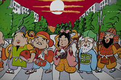
Esta imagen corresponde a una de las muchas pinturas del barrio de Kyobashi
Como ya os dije hace unos días, este blog fue galardonado con el premio bitácoras al mejor blog de viajes, pero para poder llegar a la final os pedí vuestro apoyo y vuestros votos, lo cual, implica que este premio es también mérito vuestro. Así que tal y como os prometí, mi forma de haceros a todos partícipes será hacer un concurso de agradecimiento, y aquí lo tenéis.
Una amiga mía votándome desde una ciudad de China
En otras ocasiones, como cuando hice el sorteo de una PSP, por motivos logísticos, solo pude hacerlo dentro de territorio español, pero, esta vez, tenía muy claro que el premio y el concurso tenía que estar abierto a todos los países, ya que me habéis apoyado desde muchos lugares distintos, por lo que, intenté buscar el premio ideal para este caso y, creo que he dado con él. Se trata de un vale de 150Euros sin fechas de caducidad para alojarte en cualquier lugar del mundo gracias a Wimdu.es
Wimdu es un buscador de apartamentos de vacaciones que te pone en contacto directamente con los propietarios por lo que es una forma de conocer y convivir con la gente autóctona de la ciudad que visitas. Con este vale de 150 euros podrás reservar alojamiento en Pekín, pasar unos días en un bed and breakfast de Tokio, o dormir en un apartamento de Hong Kong, pero esto son solo ejemplos, porque podrás elegir entre apartamentos en casi todas las ciudades del mundo.
Para participar lo podéis hacer de 2 formas (una u otra, si se participa de las dos formas solo se considerará una participación):
- Desde Twitter : Solo tenéis que seguirme en twitter：@Flapy y twittear con el hashtag #Flapyconcurso dónde os gustaría pasar una noche de ensueño.
- Desde Youtube : Solo tenéis que suscribiros al Canal de Un Español en Japón, y dejar un comentario en el perfil diciendo cuál es vuestro lugar favorito para una escapada.
Si tenéis dudas sobre el premio, las bases o el desarrollo del concurso podéis usar los comentarios del blog para exponer vuestra duda. Yo la responderé también en los comentarios para que todos puedan tenerlo claro. El plazo de participación se abre hoy y durará hasta el día 30 de Noviembre a las 23.59h. (hora española). El día 1 o 2 de Diciembre escribiré un post con la lista de participantes y especificaré la forma de elegir al ganador (que será aleatoria). ¡MUCHA SUERTE A TODOS!
Yatsuhashi (八つ橋)
2011-11-18T06:30:32Z
Tal y como hice con el Taiyaki, hoy, viernes, para que comencéis el fín de semana de una forma muy dulce, os voy a hablar del Yatsuhashi, una golosina japonesa (wagashi – 和菓子) típica sobretodo de Kyoto, de hecho, es muy común encontrarla en las tiendas de souvenirs en la calle de subida al Kiyomizudera. [...]
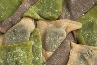
Tal y como hice con el Taiyaki, hoy, viernes, para que comencéis el fín de semana de una forma muy dulce, os voy a hablar del Yatsuhashi, una golosina japonesa (wagashi – 和菓子) típica sobretodo de Kyoto, de hecho, es muy común encontrarla en las tiendas de souvenirs en la calle de subida al Kiyomizudera. Normalmente en las tiendas que hay este producto a la entrada tienen muestras de los diferentes sabores y una muñeca como esta moviendo la cabeza hacia adelante y hacia atrás :
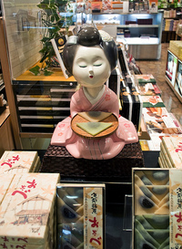
¡Esta muñeca siempre está rodeada de dulces!
La forma tradicional de elaboración es realizando una masa muy fina con harina de arroz, azúcar y canela, luego se puede hornear o dejar la masa cruda, lo que recibe el nombre de Nama-Yatsuhashi (生八つ橋). Esta masa luego se utilizaba para envolver un relleno de judías rojas dulces (Azuki) o una pasta de las mismas (Anko). Actualmente, hay una gran variedad de sabores, tanto en el relleno como en la masa que lo envuelve. Se ve muy claro en la siguiente fotografía :
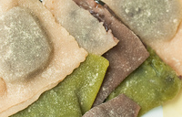
Como véis en el color de la masa, algunos son más anaranjados (los que corresponden a la receta tradicional), otros son verdes (llevan té verde en polvo en la masa) y los marrones (que llevan chocolate en polvo en la masa), también es muy común una masa muy oscura elaborada con sésamo negro. El relleno del interior, también varía bastante, además del ya mencionado anko, podemos encontrar crema de chocolate y, en algunos casos relleno de frutas.
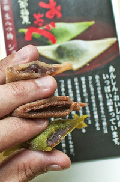
¡ BUEN FIN DE SEMANA A TODOS !
Premio Bitácoras al mejor blog de viajes
2011-11-14T07:25:24Z
Este viernes durante el evento InterQué celebrado en Madrid se hicieron públicos los resultados de la deliberación de jurado y se nombraron a los ganadores de los premios bitácoras 2011. Y, gracias a todos vosotros, este blog se ha llevado el premio bitácoras al mejor blog de viajes, un galardón que, ya sabéis, me hace [...]
Este viernes durante el evento InterQué celebrado en Madrid se hicieron públicos los resultados de la deliberación de jurado y se nombraron a los ganadores de los premios bitácoras 2011. Y, gracias a todos vosotros, este blog se ha llevado el premio bitácoras al mejor blog de viajes, un galardón que, ya sabéis, me hace mucho ilusión recibir y que podéis ver en la fotografía que encabeza esta entrada (que es original de Nacho Alonso).
Quiero dejar claro que este premio es de todos, ya que sois vosotros los que habéis conseguido que llegue hasta aquí, por lo que prometo compartirlo de alguna forma (como no puedo partir el premio en trocitos, lo haré realizando algún concurso o algo así, aún no sé el qué, pero ya pensaré en algo…). No me quedan palabras de agradecimiento por vuestra colaboración y vuestras felicitaciones, que me han llegado por decenas tanto por Facebook, como por email y Twitter. Como no pude asistir al evento por encontrarme viajando, envié un vídeo de agradecimiento, que es este que comparto hoy con vosotros.
¡¡ MUCHAS GRACIAS A TODOS !!
Una de playas dominicanas
2011-11-09T07:40:51Z
Era de noche, y la temperatura era suave, pero la humedad me hacía sudar, tomé un poco más de ron del vaso… el frescor del hielo al rozar con mis labios me alivió momentáneamente… apuré hasta la última gota. Volví a dejar el vaso sobre la mesa y caminé hacia la playa, mis pies, al [...]
Era de noche, y la temperatura era suave, pero la humedad me hacía sudar, tomé un poco más de ron del vaso… el frescor del hielo al rozar con mis labios me alivió momentáneamente… apuré hasta la última gota. Volví a dejar el vaso sobre la mesa y caminé hacia la playa, mis pies, al hundirse en la arena empapada sintieron una reconfortante sensación…
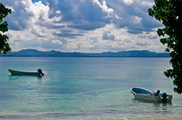
La música cambió, empezó a sonar una bachata, la fiesta enloqueció, solo estaba unos metros a mi espalda, pero por un momento yo me había sentido a solas con el mar. Era la Bachata en Fukuoka, un ritmo latino que hablaba de un beso con aroma nipón… no podía perderme esta canción…así que volví corriendo a bailar…
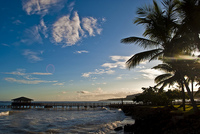
Hoy, como cada miércoles, me toca hablaros de mis aventuras fuera de Japón y, como ya ha comenzado el frío, me estaba acordando de que justo hace dos años por estas fechas, me encontraba dando mi primera vuelta al mundo express, que me llevaría, entre otros destinos, a República Dominicana, un lugar del que aún puedo sentir esa brisa cálida y el sabor a esas noche con sabor a ron.
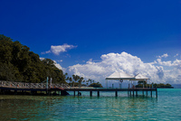
Como todos sabemos una de las cosas que más nos atraen de este país y del Caribe en general, además de la calidez de su gente y el más que asequible precio del ron… es, sin duda, su costa y sus playas, así que hoy os traigo una de playas dominicanas, para que os trasladéis conmigo a la bella Quisqueya… un lugar paradisiaco. ¿Hace un bañito?

Davao, la otra grande de Filipinas (ダバオ)
2011-11-02T10:04:40Z
Cuando aterricé en Davao City, la verdad es que lo hice sin saber lo que me iba a encontrar, todavía estoy descubriendo Filipinas, un país al que cada vez le encuentro más encanto, pero no conocía a nadie que hubiera venido a esta zona personalmente, solo sabía que esta ciudad es la pasarela a varias [...]
Cuando aterricé en Davao City, la verdad es que lo hice sin saber lo que me iba a encontrar, todavía estoy descubriendo Filipinas, un país al que cada vez le encuentro más encanto, pero no conocía a nadie que hubiera venido a esta zona personalmente, solo sabía que esta ciudad es la pasarela a varias islas filipinas perdidas y paradisiacas, que eran mi objetivo final. Pero siendo la segunda ciudad más grande del país (ya que Quezón City, es parte del área metropolitana de Manila), merecía la pena explorarla por unos días.
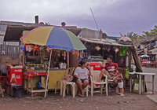
Esta ciudad, como muchas del sudeste asiático, está llena de contrastes, por un lado, encontramos familias viviendo de forma muy humilde en barriadas pobres, en muchas calles niños y no tan niños se acercarán a pedirnos dinero. Aunque personalmente no tuve ningún problema, recomiendo ser cauteloso con nuestras pertenencias, evidentemente, se nos verá a la legua que somos extranjeros, independientemente de nuestras vestimentas, color de piel o facciones, la gente en estos barrios se conoce, y captaremos las miradas de todos en cada esquina.
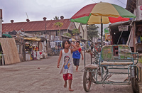
Por otro lado, encontramos oasis de lujo en diferentes puntos de la ciudad, representados por resorts normalmente regentados por europeos, creados para extranjeros o filipinos de alto nivel económico, emblemas del rapidísimo desarrollo del sector turístico que está viviendo la zona. Respecto al tráfico, aunque no hay tantos vehículos como en la capital filipina, sigue siendo caótico, así que si vais a moveros por la ciudad, a no ser que se pueda ir caminando, recomiendo hacerlo en taxi, son relativamente baratos y es lo más seguro. También hay jeepneys en Davao, pero esta vez no monté en ninguno, tenía demasiado poco tiempo como para perderme otra vez (como ya me pasó en Manila).
Sobre la vida nocturna, la ví más sana que en la capital, es decir, puedes salir con cara “extranjero despistado” por la noche sin que te hagan proposiciones deshonestas con frecuencia, por lo demás, precaución con nuestros bolsillos, con los locales a los que entramos y con los vehículos en las zonas de marcha ya que, bastantes más conductores de lo que estamos acostumbrados, es posible que lleven copas de más. Sobre la gente, la verdad es que muy abierta, llena de curiosidad por conocer otros países y muy amistosa.
Yo salí solo por la noche a dar una vuelta y, en seguida, conocí a unas chicas muy simpáticas que me presentaron a sus amigas y, al final, nos juntamos un buen grupo. Al día siguiente fuimos a comer a un restaurante típico de la zona, la comida básicamente consistía en arroz, pinchos morunos, pollo, chorizo y longaniza fritos. Curiosamente muchos de estos platos (también los “callos”, por ejemplo) conservan su nombre español. Como curiosidad y, para finalizar mi relato, comentar que estábamos comiendo y tras unos minutos usando los cubiertos, de repente, me dijeron: ¿David, te importa que comamos con las manos? y comenzamos todos a comer con las manos. Yo me puse perdido, pero ellas, cogiendo la comida sin problemas, se mancharon solo lo justo y necesario… ¡cuánto nos queda por aprender!… 
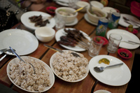